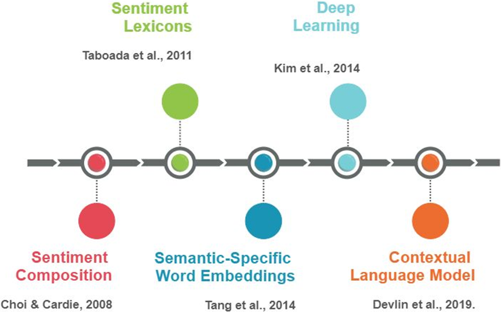
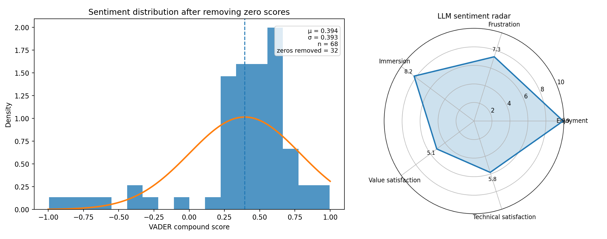

Sentiment Analysis with LLMs
This project is an update of my earlier Letterboxd Sentiment project. The first version was built around Letterboxd movie reviews and a more classical sentiment workflow using VADER, score distributions, and word-frequency visualizations. It was a fun project, and it answered an interesting first question: can we use review text to get a quick picture of how audiences emotionally respond to a film?
Over time, though, the landscape changed. Scraping Letterboxd at scale became much less reliable, so instead of trying to force the old setup, I decided to treat that as a reason to upgrade the project. The new version keeps the same core curiosity about audience reaction in review text, but moves to a more stable review source and a more expressive analysis layer. Rather than staying with a single positive or negative score, it now combines official Steam user reviews with LLM-based interpretation to capture several dimensions of how people talk about a title.
In that sense, this project is both a continuation and a rethink. The Letterboxd version still matters because it established the original intuition, the visual style, and the baseline sentiment pipeline. The updated version keeps that foundation, but pushes it into a setup that is more robust, more current, and honestly more interesting to read. It is less about assigning a label to a review and more about understanding what kind of reaction the text is actually expressing.
01 - History of Sentiment Analysis
Modern sentiment analysis is usually associated with the early 2000s, when the growth of online reviews, forums, and product feedback created a strong demand for automatic ways to measure opinion at scale. But the basic idea is older than that. Long before large language models, researchers were already trying to formalize emotional tone in text by building sentiment lexicons, tracking positive and negative terms, and asking whether opinion could be represented as something measurable. Even those early methods captured the idea that language leaves emotional traces, and those traces can be studied systematically.

From there, the field moved through a few clear stages. Lexicon-based approaches were followed by classical machine learning methods such as bag-of-words, n-grams, TF-IDF, Naive Bayes, and SVMs. Then came word embeddings and deep learning, which made it easier to represent context and semantics in a richer way. More recently, transformers and large language models changed the game again by making it possible to interpret sentiment in a more contextual and flexible manner. That matters because real reviews are rarely just positive or negative. People can love the atmosphere of a game, hate its performance issues, and still say it was worth the money.
That broader evolution is exactly what this project tries to reflect. The older version leaned more on the classical side: polarity scores, distributions, and word clouds. The newer version keeps those interpretable tools, but adds an LLM layer that can separate different kinds of reactions inside the same body of reviews. So instead of replacing the past approach entirely, the project follows the history of the field itself: starting with simple sentiment signals and then moving toward more nuanced interpretation.
02 - Database: Letterboxd Movie Reviews
The original project undertook a sentiment analysis to compare the audience's emotional responses toward movie directors. An analysis of movie reviews made by users at Letterboxd was carried out, aiming to explore how the sentiments differ for directors in different genres and levels of popularity. That first version is still an important part of the story because it motivated the broader question behind the project: what can review text reveal about the way people emotionally receive a film? It also gave the work a very concrete cultural setting. These were not abstract benchmark texts. They were reactions to recognizable films, directors, genres, expectations, and viewing experiences.
That is part of what made Letterboxd such a nice starting point. A review attached to a film comes with context. People are not only saying whether they liked something. They are reacting to tone, pacing, performances, visual style, endings, reputation, and everything they expected before pressing play. Because of that, the text already carries more than a simple positive or negative signal, even if the first version of the project mostly treated it through a classical sentiment lens. It was a good environment for testing how far a lightweight approach could go.
We started by scraping data from Letterboxd using BeautifulSoup. We collected many pages of reviews for a given movie and used NLTK's SentimentIntensityAnalyzer to assign a sentiment score to each review. This produced a compound metric that made it possible to organize the text into positive, negative, or neutral groups. From there, it became possible to build score distributions, compare audience reception across titles, and look for recurring patterns in the language of praise and criticism.


By aggregating those scores, it became possible to get a quick sense of the overall audience reception of a film and compare that reception with things like genre, popularity, or critical reputation. Excluding zero scores gave a distribution that often looked approximately gaussian. For Interstellar, for example, the resulting curve had a positive center with a moderate spread, suggesting that the audience was not only favorable overall but also somewhat clustered around a shared reaction.


The project then moved beyond a single score by plotting word clouds for positive and negative reviews. The idea was simple: if certain words keep appearing in positive reviews, and other words keep appearing in negative ones, that already tells us something useful about the audience response. This offered a fast qualitative view of the themes people associated with a film, even if the filtering still needed work and some repeated filler words kept showing up.


Looking back, that first version was limited, but in a good way. It made clear what a classical pipeline can do well: score large numbers of reviews quickly, produce interpretable distributions, and surface recurring vocabulary. At the same time, it also exposed the next question naturally. A review is not just a polarity score. Sometimes people like a film for one reason and dislike it for another. Sometimes they admire the craft but feel emotionally distant. That is exactly the point where a more multidimensional approach becomes interesting.
03 - The upgrade: LLMs and Steam user reviews
The updated version keeps the same general objective, extracting audience reaction from review text, but changes both the data source and the analysis layer. Since large-scale Letterboxd scraping was no longer a stable option, the project pivoted to official Steam user reviews. That solves an important practical problem, but it also keeps one of the best features of the original version: the text is still attached to a specific title and still written by real users reacting to an experience.
The bigger change is methodological. Instead of relying only on a one-dimensional sentiment polarity score, the new system adds an LLM-based layer that evaluates several dimensions at once. In the current version, those dimensions are enjoyment, frustration, immersion, value satisfaction, and technical satisfaction. That makes the analysis much more expressive. Two games can have similarly positive overall sentiment and still differ a lot in the kind of reaction they provoke. One may be praised for atmosphere but criticized for performance. Another may be mechanically fun but seen as overpriced. A single scalar score tends to flatten those distinctions. The LLM layer tries to recover them.
The visualization below summarizes that newer workflow. On one side, the non-zero score distribution still plays the role of the classical baseline, keeping continuity with the first version of the project. On the other side, the radar chart adds a multidimensional read of the review set. That combination is really the point of the upgrade: keeping the straightforward interpretability of the older approach, while adding a richer model of what people are actually saying. It turns the project from a simple sentiment analyzer into a more general review intelligence pipeline.

So the project ends up telling two stories at once. One is about sentiment analysis itself, moving from lexicons and classical NLP toward contextual interpretation with language models. The other is about this specific project growing up a bit: starting with a small movie-review experiment, running into the limits of that setup, and then turning those limits into an excuse to build something better.